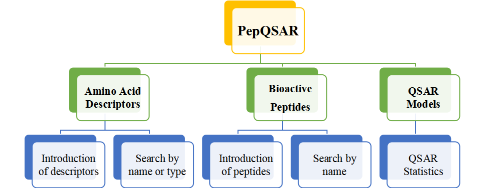

- 
-

<
>
- 1
- 2
- 3
- 4
Welcome to PepQSAR DB v1.0 !
- This is the first database dedicated to quantitative structure-activity relationships of peptides, providing a large number of relevant data. You can find amino acid descriptors, active peptide datasets, modeling results of various models, and more
- Our database is divided into two parts: amino acid descriptors and bioactive peptides.
- Different amino acid descriptors are often used to model various bioactive peptide data sets in quantitative structure-activity relationship studies.In order to facilitate the access and use of these different amino acid descriptors and bioactive peptide data, we have created this database.